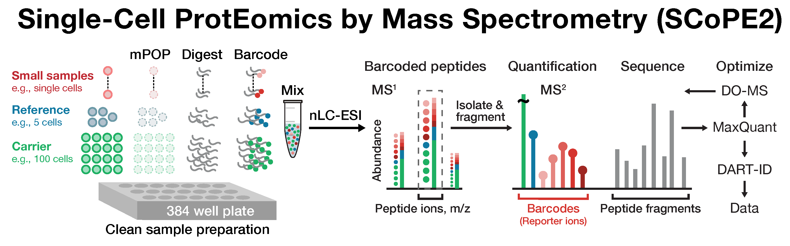

Seeking principles
in the coordination among protein synthesis, metabolism, cell growth and differentiation
Research Projects
We aim to understand the rules governing emergent systems-level behavior and to use these rules to rationally engineer biological systems. We make quantitative measurements, often at the single-cell level, to test different conceptual frameworks and discriminate among different classes of models. Areas of focus include:- Single-cell proteome biology
- Tracking proteome dynamics in single cells
- Translational control of protein synthesis
- Promoting community research
Single-cell proteomics by mass-spectrometry
Cellular heterogeneity is important to biological processes, including cancer and development. However, proteome heterogeneity has relatively unexplored because of the limitations of convential affinity-based reagents for quantifying proteins in single cells. To alleviate these limitations, our laboratory introduced Single Cell ProtEomics by Mass Spectrometry (SCoPE-MS) in 2017, and validated its ability to identify distinct human cancer cell types based on their proteomes. Since then, we have introduced multiple methods for single-cell protein analysis. These allow priortization of thousands of proteins and highly parallel analysis of both single-cells and peptides. All of these methods can be implmented using accessible commercial equipment.
This research is funded by an iAward from Sanofi and an award from CZI seed networks.

|

|
Tracking proteome dynamics in single cells
One of the most significant recent developments in biomedical research and engineering is the explosion of technologies for quantifying thousands of genes in single cells. These technologies have transformed our ability to identify cell types and cell states in healthy and diseased human tissues. Our laboratory has contributed to these efforts by pioneering powerful methods for quantifying proteins in single cells at unprecedented scale. For the first time, we can examine single cells at systems level. Yet, these glimpses are static: we can only take one snapshot of a cell, showing us protein type and the amount of each protein, per cell. To overcome this limitation, we develop methods that will enable us to measure the abundance, the birth and and the death rates of proteins across time. By introducing isotopically-labeled amino acids at different time points over the life of a cell, we create a protein travelogue for each cell. Then, the travelogue of each cell is decoded by mass-spectrometry, thus revealing the protein dynamics underpinning the life and functions of each cell. This technology can move biomedical research from the era of still pictures to the era of dynamic movies, the era when we can finally see and understand the dynamics of protein interactions that animate each cell.|
This research is funded by the Paul G. Allen Frontiers Group |

|
Ribosome-mediated translational regulation
All living cells must coordinate their metabolism, growth, division, and differentiation with their gene expression. Gene expression is regulated at multiple layers, from histone modifications (histone code) through RNA processing to protein degradation. While most layers are extensively studied, the regulatory role of specialized ribosomes (ribosome code) is largely unexplored. Such specialization has been suggested by the differential transcription of ribosomal proteins (RPs) and by the observation that mutations of RPs have highly specific phenotypes; particular RP mutations can cause diseases, known as ribosomopathies, and affect selectively the synthesis of some proteins but not of others. This selectivity and the differential RP transcription raise the hypothesis that cells may build specialized ribosomes with different stoichiometries among RPs as a means of regulating protein synthesis.While the existence of specialized ribosomes has been hypothesized for decades, experimental and analytical roadblocks (such as the need for accurate quantification of homologous proteins and their modifications) have limited the evidence to only a few examples, e.g., the phosphorylation of RP S6. We developed methods to clear these roadblocks and obtained direct evidence for differential stoichiometry among core RPs in unperturbed yeast and mammalian stem cells and its fitness phenotypes. We aim to characterize ribosome specialization and its coordination with gene regulation, metabolism, and cell growth and differentiation. We want to understand quantitatively, conceptually, and mechanistically this coordination with emphasis on direct precision measurements of metabolic fluxes, protein synthesis and degradation rates in absolute units, molecules per cell per hour.
|
This research is funded by the NIH Director's New Innovator Award |

|
Resources for Single-Cell Proteomics
- Single-cell proteomics networks
- Single-cell proteomics news
- Single-cell proteomics methods
- Single-cell proteomics data
Single-cell proteomics conference
|
Single-Cell Proteomics
Understand that cell
|
Single-Cell Proteomics Conference, June 9 - 10, 2018
Single-Cell Proteomics Conference, June 10 - 12, 2019
Single-Cell Proteomics Conference, August 18 - 19, 2020
Single-Cell Proteomics Conference, August 16 - 18, 2021
Single-Cell Proteomics Conference, June 15 - 16, 2022